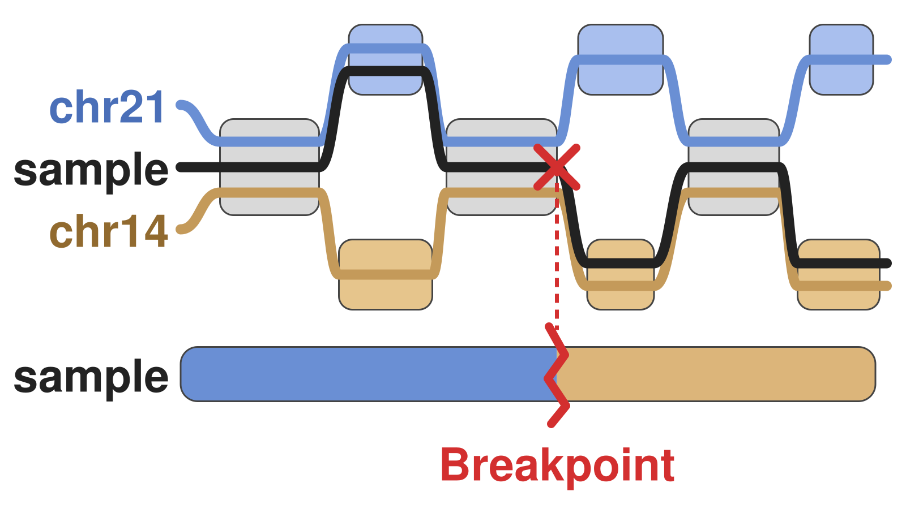

Pangenome×Representation
We represent pangenomes implicitly, without building a graph. Tracepoints compress alignments, and impg queries them to build graphs on demand. These approaches make population-scale analysis accessible.
We build and analyze pangenomes to study genome variation, cancer, and complex disease.
We work across the full pangenomics stack. With pangenome×representation we build implicit, queryable alignments and graphs, and with pangenome×association we use graph features as genetic markers. We apply them to pangenome×fragility in the human genome, to cancer×pangenomics in tumors, and to complex disease.

We represent pangenomes implicitly, without building a graph. Tracepoints compress alignments, and impg queries them to build graphs on demand. These approaches make population-scale analysis accessible.

We leverage pangenomes for genome-wide association studies, finding trait associations with structural variants absent from linear references. Our methods use graph features, not variant calls, as genetic markers.

We study hidden telomere repeats in the human pangenome, weak spots where DNA can break. In glioblastoma, we read each DNA molecule on its own to find markers of unstable tumors and track their evolution.

We build personalized pangenomes from tumor and matched normal samples with long-read sequencing and de novo assembly. They reveal somatic structural variants that a single reference misses.
The lab opened in January 2026. We are actively building the team.
Full list on Google Scholar or ORCID.